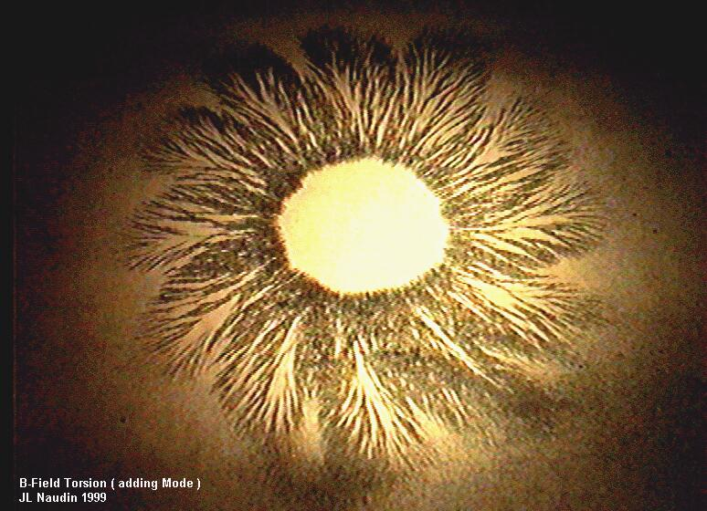
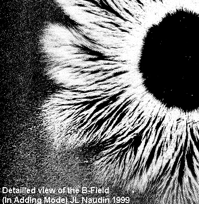

B-Field Torsion Pictures
created on 01-20-99 - JLN Labs - last update on 01-20-99


If you have any suggestions or comments, send me your Feedback
Email : JNaudin509@aol.com
Return to the B-Field Torsion page